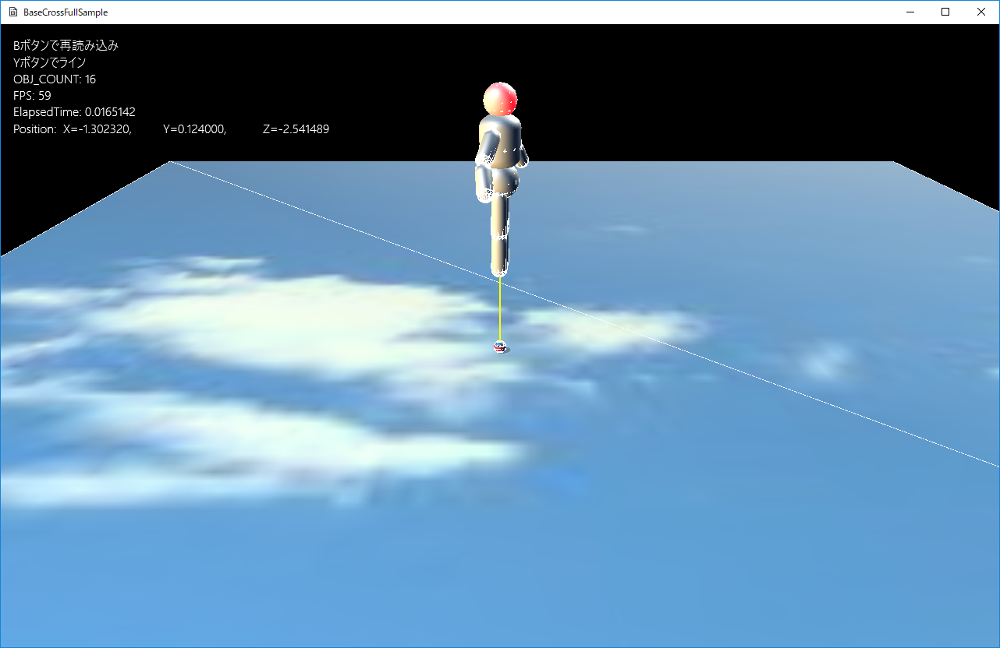
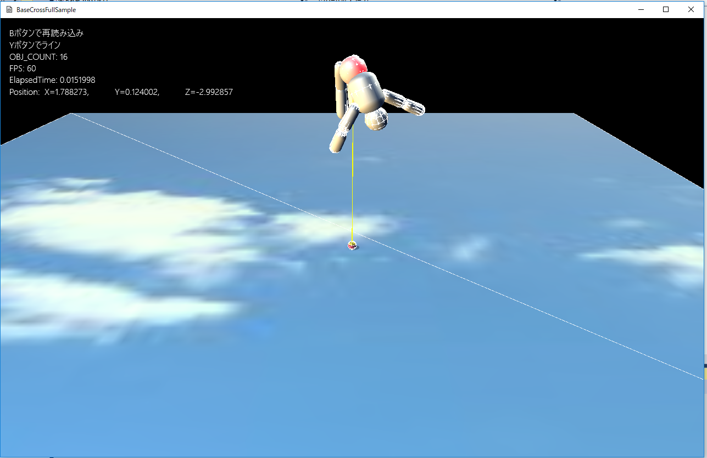

図0704a
Yボタンをいったん離して、もう一度Yボタンを押すと、選択される部位が変わります。これを連続して行うと、続けて選択される部位が変わります。

図0704b
void Ragdoll::OnCreate() {
//初期位置などの設定
auto Ptr = GetComponent<Transform>();
float Scale(1.0f);
Ptr->SetScale(Vec3(Scale));
Ptr->SetQuaternion(m_StartQt);
Ptr->SetPosition(m_StartPos);
//マルチ物理オブジェクト
auto PsPtr = AddComponent<PsMultiBody>();
PsPtr->SetDrawActive(true);
PsPtr->SetAutoTransform(false);
uint32_t contactFilterSelfA = 0x01;
uint32_t contactFilterSelfB = 0x02;
uint32_t contactFilterSelfC = 0x04;
uint32_t contactFilterSelfD = 0x08;
uint32_t contactFilterTargetA = 0x0d;
uint32_t contactFilterTargetB = 0x0a;
uint32_t contactFilterTargetC = 0x05;
uint32_t contactFilterTargetD = 0x0b;
size_t HeadNum, TorsoNum, BodyNum,
UpperLegLNum, LowerLegLNum, UpperArmLNum, LowerArmLNum,
UpperLegRNum, LowerLegRNum, UpperArmRNum, LowerArmRNum;
float inertiaScale = 3.0f;
{
//頭部の作成
PsSphereParam param;
param.m_Radius = 0.3f;
param.m_Mass = 3.0f;
//慣性テンソルの計算
param.m_Inertia = inertiaScale * BasePhysics::CalcInertiaSphere(param.m_Radius, param.m_Mass);
param.m_MotionType = PsMotionType::MotionTypeActive;
param.m_Quat = m_StartQt;
param.m_Pos = m_StartPos + rotate(m_StartQt, Vec3(0.0f, 3.38433f, 0.0f));
param.m_ContactFilterSelf = contactFilterSelfB;
param.m_ContactFilterTarget = contactFilterTargetB;
//頭部の追加
HeadNum = PsPtr->AddSphere(param);
}
{
//腰の作成
PsSphereParam param;
param.m_Radius = 0.35f;
param.m_Mass = 10.0f;
//慣性テンソルの計算
param.m_Inertia
= inertiaScale * BasePhysics::CalcInertiaSphere(param.m_Radius, param.m_Mass);
param.m_MotionType = PsMotionType::MotionTypeActive;
param.m_Quat = m_StartQt;
param.m_Pos = m_StartPos + rotate(m_StartQt, Vec3(0.0f, 1.96820f, 0.0f));
param.m_ContactFilterSelf = contactFilterSelfB;
param.m_ContactFilterTarget = contactFilterTargetB;
//腰の追加
TorsoNum = PsPtr->AddSphere(param);
}
//中略
{
//腰と胴体のジョイント
PsSwingTwistJointParam jparam;
jparam.m_AnchorPoint = m_StartPos + rotate(m_StartQt, Vec3(0.0f, 2.26425f, 0.0f));
jparam.m_TwistAxis = rotate(m_StartQt, Vec3(0.0f, 1.0f, 0.0f));
jparam.m_IndexA = PsPtr->GetPsObject(TorsoNum)->GetIndex();
jparam.m_IndexB = PsPtr->GetPsObject(BodyNum)->GetIndex();
PsPtr->AddSwingTwistJoint(jparam);
}
{
//胴体と頭部のジョイント
PsSwingTwistJointParam jparam;
jparam.m_AnchorPoint = m_StartPos + rotate(m_StartQt, Vec3(0.0f, 3.13575f, 0.0f));
jparam.m_TwistAxis = rotate(m_StartQt, Vec3(0.0f, 1.0f, 0.0f));
jparam.m_IndexA = PsPtr->GetPsObject(BodyNum)->GetIndex();
jparam.m_IndexB = PsPtr->GetPsObject(HeadNum)->GetIndex();
PsPtr->AddSwingTwistJoint(jparam);
}
//中略
//ジョイントのパラメータ調整
for (auto& j : PsPtr->GetPsJointVec()) {
j->getPfxJoint().m_constraints[0].m_warmStarting = 1;
j->getPfxJoint().m_constraints[1].m_warmStarting = 1;
j->getPfxJoint().m_constraints[2].m_warmStarting = 1;
j->getPfxJoint().m_constraints[3].m_damping = 0.05f;
j->getPfxJoint().m_constraints[4].m_damping = 0.05f;
j->getPfxJoint().m_constraints[5].m_damping = 0.05f;
}
}